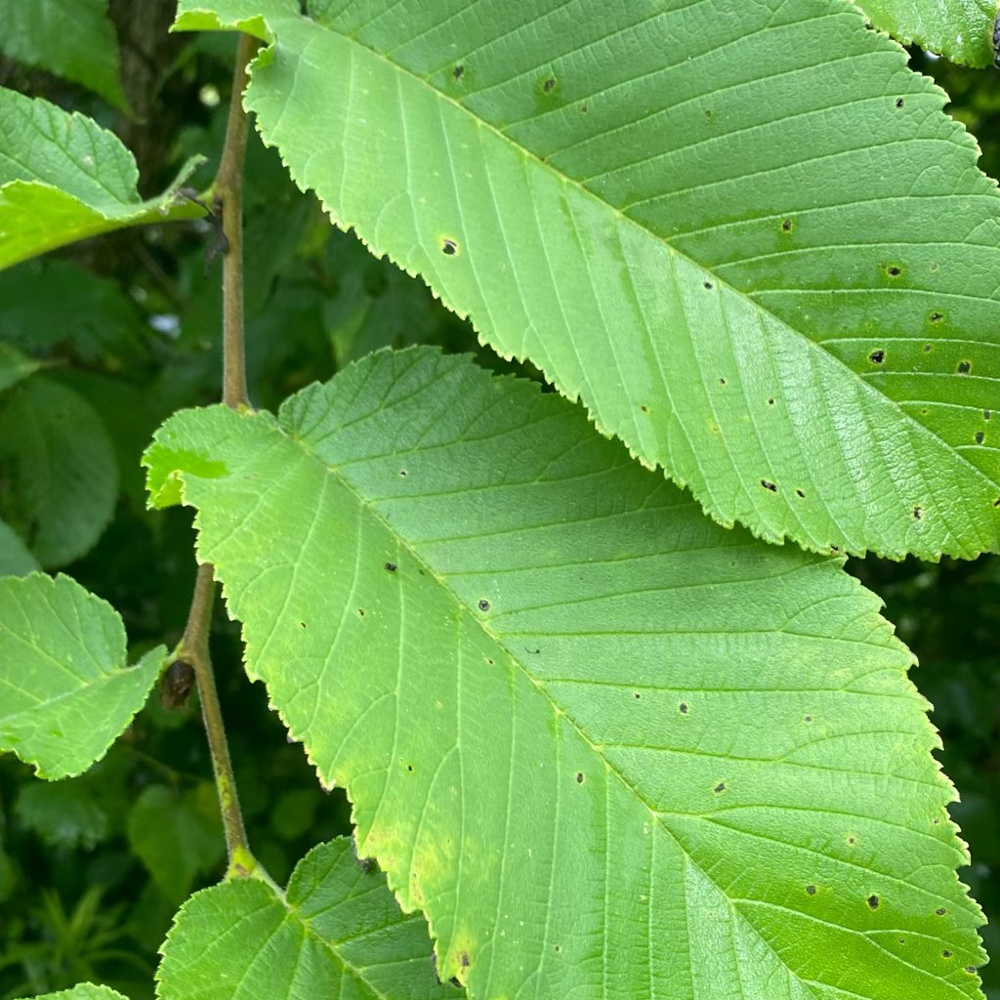

böceklerin neden olduğu beslenme hasarı
Ne Gözlüyorsunuz
Yapraklarda düzensiz delikler ve oyuklar; kenarlarda tırtıklanma; genç sürgün uçlarının yenmiş görünmesi. Gece daha belirgin olabilir.
Kısa Açıklama
Çeşitli böceklerin yaprak ve sürgünleri yemesi sonucu oluşan fiziksel kayıplardır. Fail, tür ve yaşam evresine göre değişir (tırtıl, salyangoz/sümüklüböcek, çekirge vb.).
Doğal mı, Sorun mu?
Genellikle yönetilebilir bir sorundur. Hafif zarar bitkiyi öldürmez; yoğun beslenme büyümeyi yavaşlatır ve estetiği bozar.
Olası Nedenler
- Tırtıllar: Düzensiz geniş oyuklar; gündüz saklanıp gece beslenirler.
- Sümüklüböcek/salyangoz: Geniş kemirilme ve parlak sümüksü iz.
- Kınkanatlı/çekirgeler: Kenarlarda tırtıklanma.
- Dışarıdan taşınan saksı/toprakla gelen zararlılar.
Nasıl Doğrulanır
- Gece el feneriyle kontrol; fail çoğu zaman geceleri aktiftir.
- Yaprak altları, saksı kenarları ve toprak yüzeyini inceleyin.
- Sümüklüböcek izleri parlak şeritler halindedir.
- Küçük siyah/yeşil granüller (dışkı) tırtıla işaret eder.
Ne Yapmalı
- Mekanik toplama: Gördüklerinizi eldivenle toplayın.
- Bariyerler: Sümüklüböcek için bakır şerit veya kuru diatomit uygulayın.
- Biyolojik: Bacillus thuringiensis içeren ürünler tırtıllara karşı etkilidir (etikete uyun).
- Kültürel: Dış mekândan içeri alınan bitkileri 2–3 hafta ayrı tutun.
- Kimyasal (gerekirse): İç mekân için etiketli, hedefe özgü ürünler; geniş spektrumdan kaçının.
Önleme
- Düzenli yaprak altı kontrolü; ilk küçük deliklerde müdahale.
- Pencere/kapılara sineklik takın.
- Dış ortamdan gelen saksı ve toprakları karantinaya alın.
Resimler
